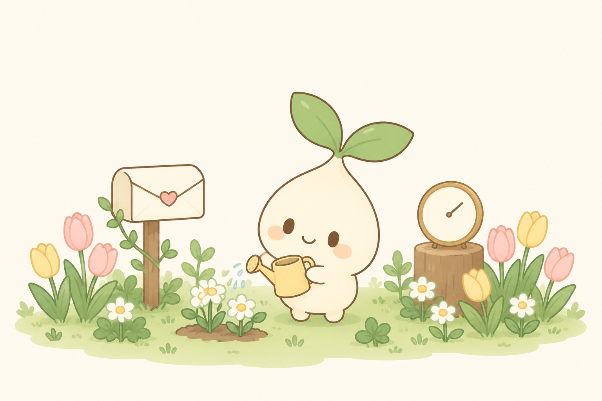
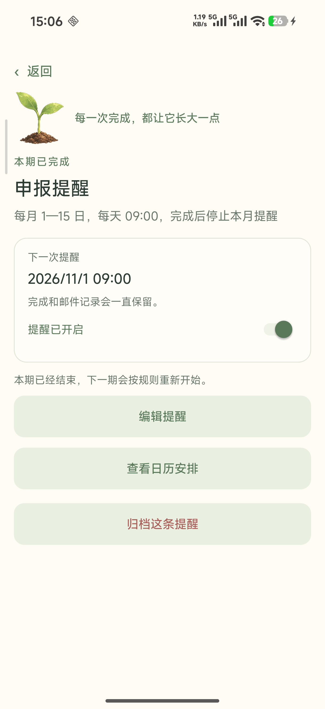
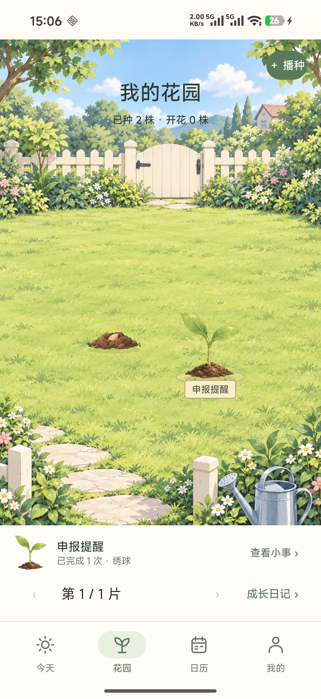
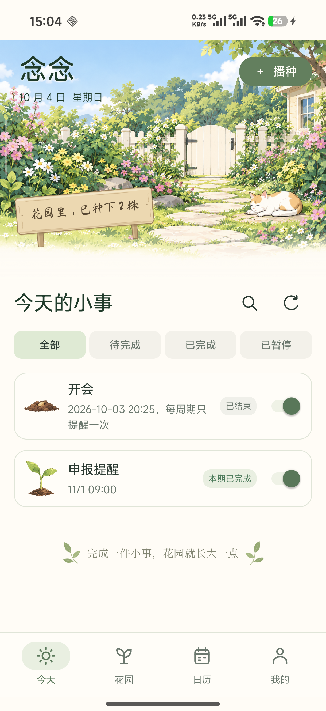
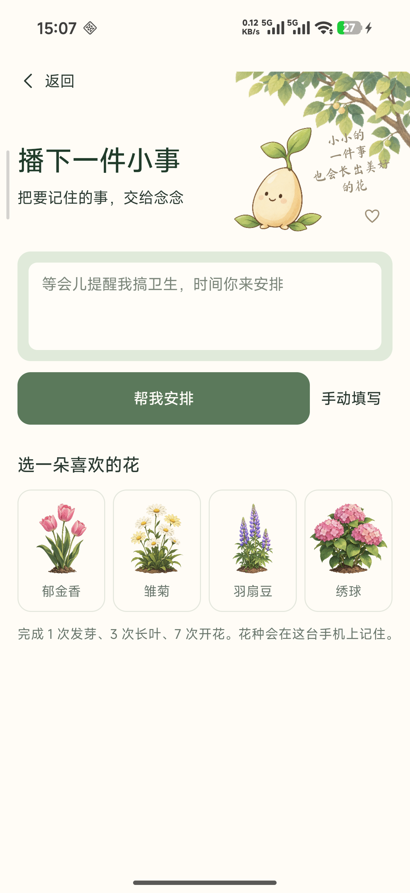
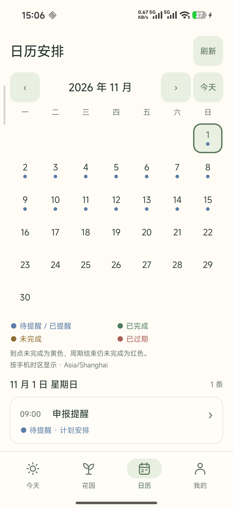
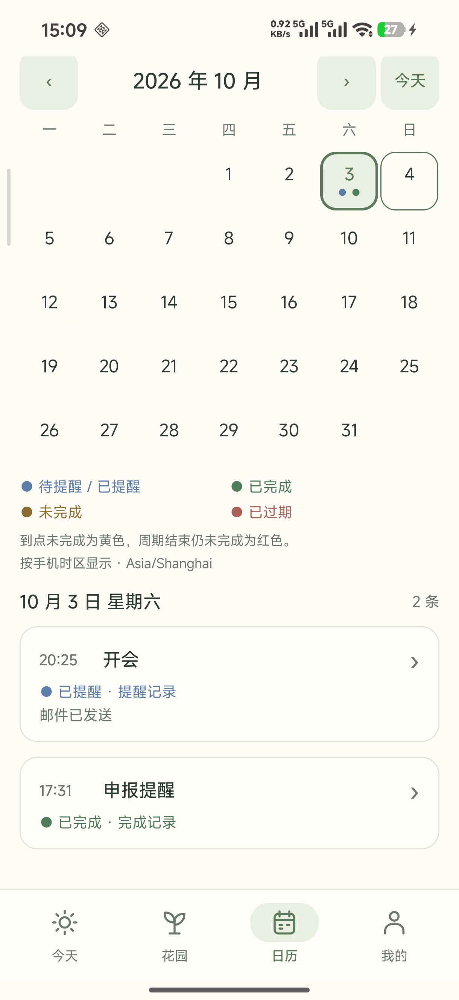

念念先给一份建议
首次时间 · 重复间隔 · 怎样算完成
“我先安排在 10 分钟后提醒，
没做完就每 15 分钟提醒一次。
你看看，确认后我再开始。”
把「等会儿再做」交给念念
AI 先给建议，你确认后再开始。

“等会儿提醒我搞卫生，
时间你来安排。”
首次时间 · 重复间隔 · 怎样算完成
“我先安排在 10 分钟后提醒，
没做完就每 15 分钟提醒一次。
你看看，确认后我再开始。”
先判断怎样算完成，再安排提醒节奏。
“开会前提醒一下，不用确认完成。”
本周期发一次提醒，不反复催。“1—15 号提醒我申报，交完就停。”
期间继续提醒，完成后停止本期。“每天提醒我整理桌面。”
今天做完停今天，明天重新开始。“提醒我收衣服，直到我点完成。”
按设定间隔继续，完成后停止。每月申报：1—15 日，每天 09:00 提醒。

点一次完成，
停止本月剩余提醒。
11 月 1 日 09:00，
按原规则重新开始。
10 分钟后提醒，没做完就每 5 分钟继续。
这件一次性待办，就不再催了。
如果设置了截止时间或次数上限，
到边界也会停止提醒。

同一条任务累计完成
每次真实完成，
才增加一份养分。
不扣进度，不清零。已经积累的成长，会留下来。




做完可以留一句话、附一张照片，
给每一件小事留个纪念。
我想把那些「等会儿再做」的小事，